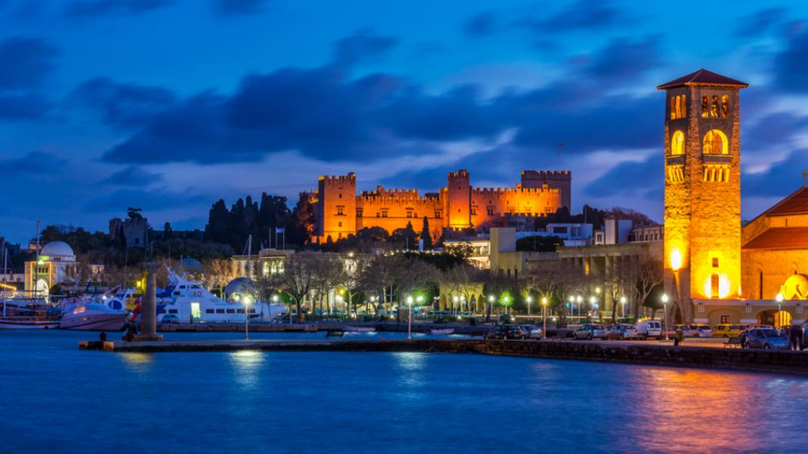

ΡΟΔΟΣ
Η Ρόδος είναι ένα νησί της Ελλάδας που βρίσκεται στο νοτιοανατολικό Αιγαίο και ανήκει στα Δωδεκάνησα. Σύμφωνα με την απογραφή του 2021, ο πληθυσμός του νησιού ανέρχεται σε 124.851 κατοίκους, γεγονός που καθιστά τη Ρόδο το τρίτο πολυπληθέστερο ελληνικό νησί. Κάθε χρόνο δέχεται μεγάλο αριθμό τουριστών, ιδιαίτερα τους καλοκαιρινούς μήνες. Συγκεκριμένα,τον Αύγουστο του 2022 τέσσερα εκατομμύρια τουρίστες επισκέφτηκαν τη Ρόδο.
